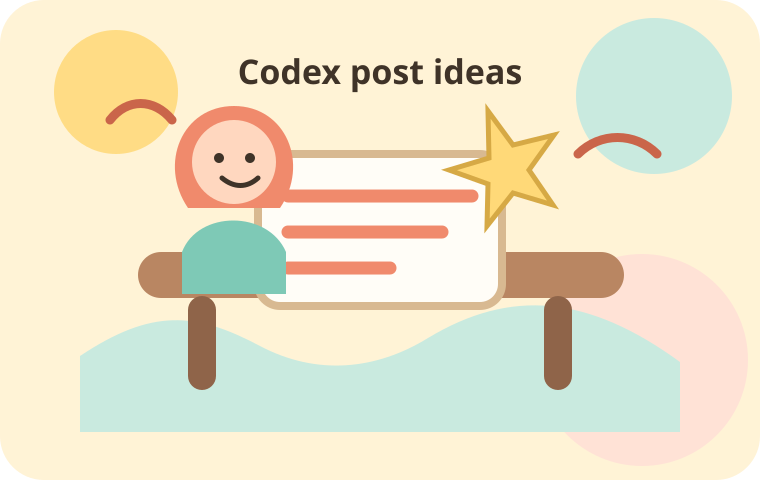

ぴなさん専用・投稿ネタメーカー

Codexの魅力を
やさしく届ける投稿を作ろう
Codexを始める人・気になっている人に向けて、Threadsで使いやすい投稿ネタと文章案を自動で組み立てます。
相談・導線リンクを入れるWhat is this?
初心者に伝わる言葉へ整える
難しい専門用語をできるだけ避けて、「何ができるの？」「最初に何を試せばいい？」が伝わる投稿づくりをサポートします。
- 投稿テーマを選ぶだけで方向性が決まる
- 入力した一言から文章案を生成
- 絵本風のやさしいUIでスマホ操作しやすい
Make a post
投稿ネタを作る
Result
生成された投稿案
Beginner guide
投稿前のやさしい確認
1
できることを小さく伝える
「全部できる」ではなく、README作成や文章修正など身近な例にすると伝わりやすくなります。
2
体験をひとつ足す
自分が試したこと・迷ったことを入れると、初心者が安心して読みやすい投稿になります。
3
最後は行動を軽く促す
「まずは小さな修正から」など、読んだ後の一歩が分かる締めにしましょう。